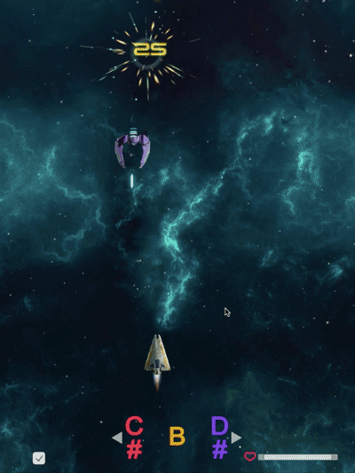
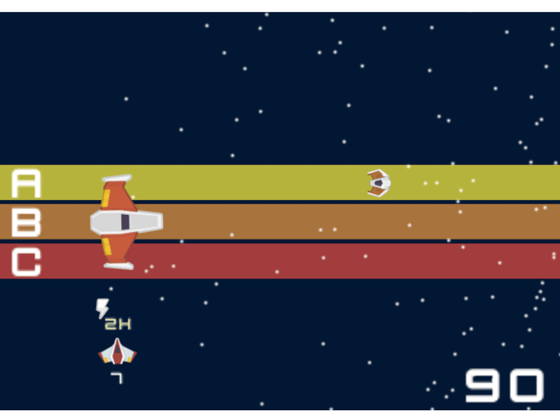

Games that require a Microphone, will NOT work on IE (don't use IE in general).
Double-check your browser's microphone access to unblock this site (Settings > Content > Microphone).
Polyphonic Pitch Detector
Can detect notes and chords(!)
 P l a y
P l a y
JS
See your music live
Develop insane intuition
An interactive spectrogram that can instantly detect the note and chord(!) you are playing.
Happy to say that this is by far the fastest(20ms) and most accurate music viz and polyphonic detection on the open web. Sing a song.
Polyphonic chord detection FTW
Soundman
Play with your Voice
 P l a y
P l a y
JS
Your voice is key
Your neck extends with pitch. If you can hold your pitch, Soundman spits fire to catch flies.
Finally you face-off the Goblin - match his exact pitch to win.
PS: ! (optimized_For_Performance)
Piano FunFun
You need a Keyboard. I'll do more for phones eventually
 P l a y
P l a y
JS
Play the Piano on your Keyboard. You can:
+ shift sound slowly or with Octave jumps
+ see the chords you're playing
+ face the music
+ don't forget to use special keys!
NEW: >>> Practice with Piano + ChordWorkout
Sounds are triangle oscillators made through the Web Audio API. It's still experimental, not standard webtech... sounds good on Chrome,
sounds bit weirder on Safari. Cute faces don't show well in Firefox...
RealTime Pitch Detection and Visualization
 P l a y
P l a y
JS
I made this intuitive, realtime spectrogram because all other pitch detection and spectrogram
products on web/mobile were horrible.
E.g. bad mappings (hello audacity), dumb Signal Processing code (why dafuq would I need autocorrelation for monophonics, Boris Smus?)
and cluttered, shit code from academics ('popular' YIN algorithm -- 1200ms delay @ 70% accuracy. 1000 lines of C# for jack shit. No thanks).
You know it's bad when you see hardcoded frequency to note mappings instead of transform functions (just logarithms, bro).
The core pitch detection algorithm is extremely accurate for single harmonic sounds and has no delay (~ 1 Frame == 20ms).
+ Shows pitch and timbre exactly where it occurs in the spectrogram
+ Gives you a strong sense of intervals, fluctations and musical relationships
+ Even if tone-deaf, you see what's up and train your voice and ear.
It will ask you for microphone access. Might not work on all browsers.
MouseMusic
P l a y
JS
Use your mouse to play with oscillator sounds. Other than most music web/mobile XPs I'm
stricter with the mapping. This has the side-effect of actually learning something.
+ Get a feeling for intervals and pitch
+ See the melody of the last few seconds
Might not work on all browsers.
Litte Prince Reloaded
THREE.JS
Help Explorer Saint Exupery through the Rainbow Desert
Covers a mysterious voicerange - forgot what it was. Good luck
+ Control plane height with pitch (voice/instrument)
Abandoned -- Decided against using three.js for now. Polygon config for plane was borrowed. Will ask for microphone access.
Turned off DEMO
Melody Histogram

JS
See a histogram of your pitch or monophonic sounds
+ Shows you how volatile your voice is
+ Gives good sense of melody you're playing
+ Challenge yourself to a singing range of one octave
Could need a longer buffer to correct for pitch jumps, but I moved on. Turned off DEMO, because I decided it sucks
Beneath are some Unity Experiments. I made them to learn programming.
They are buggy and badly written, so no more demos.
SpaceShooter 3D

Unity 3D
Same concept as the earlier 2D spaceshooter. Dodge X, shoot Y -- you know the spiel. The pitch controls change with time and are always
part of the major scale.
Image: C# = left, B = shoot; D# = right
I demoed this game in San Francisco at the Noisebridge 10-Year Anniversary after being part of a game dev bootcamp there.
Note Catcher
Unity 3D
I borrowed another disappointing Pitch Detection module.
You collect the colored triangles by playing their corresponding notes. The speed and width of the "player" depend on how consistent the pitch sounds
SpaceShooter

Unity 3D
After two weeks of coding I used the YIN Pitch Detection algorithm to make a
guitar controlled space shooter.
Interval Trainer
Unity 3D
Humble beginnings. The program tests your ear. It plays an interval and you have to guess it.